UI Mockup Gallery
 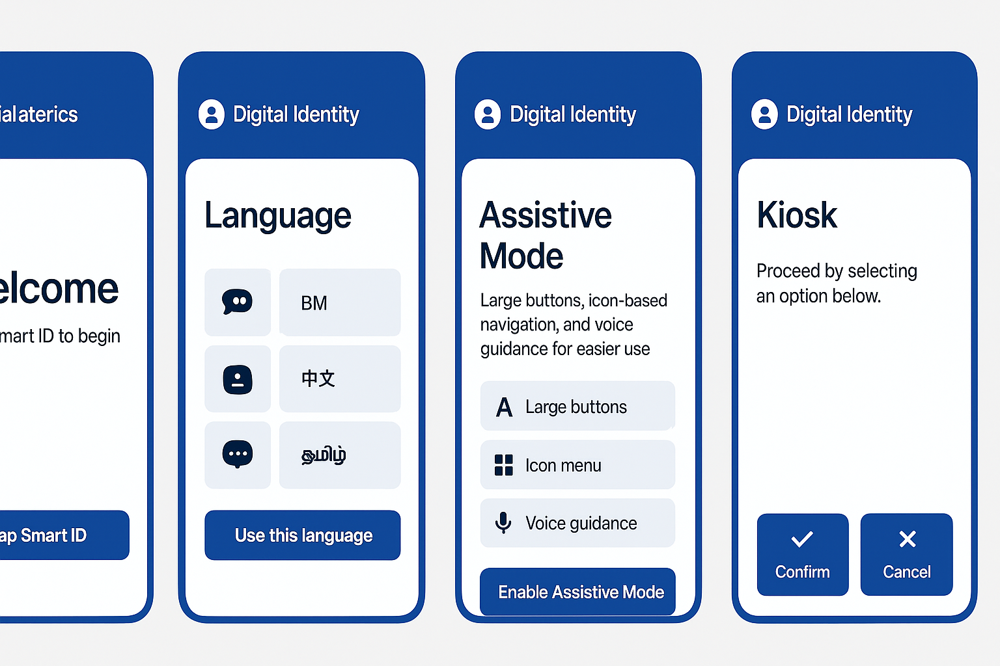
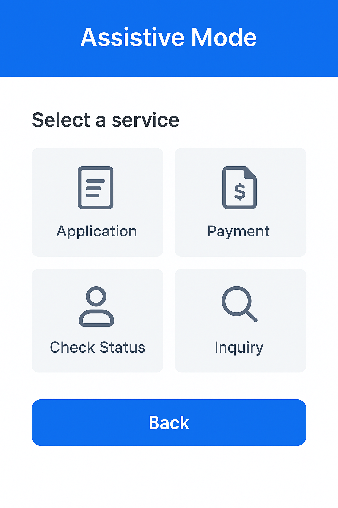
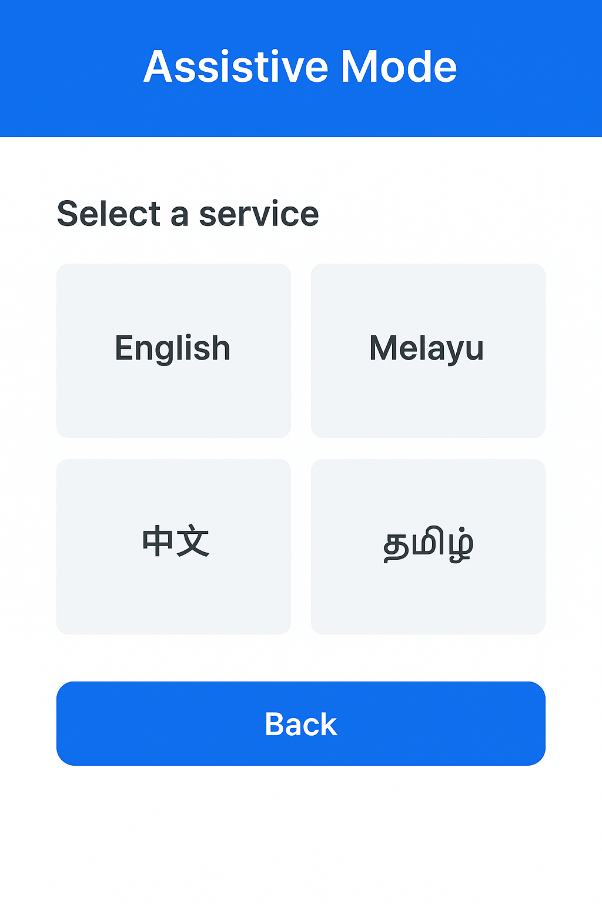
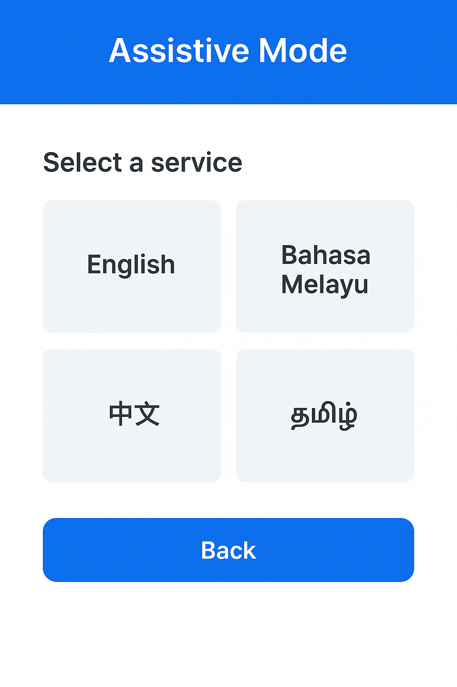
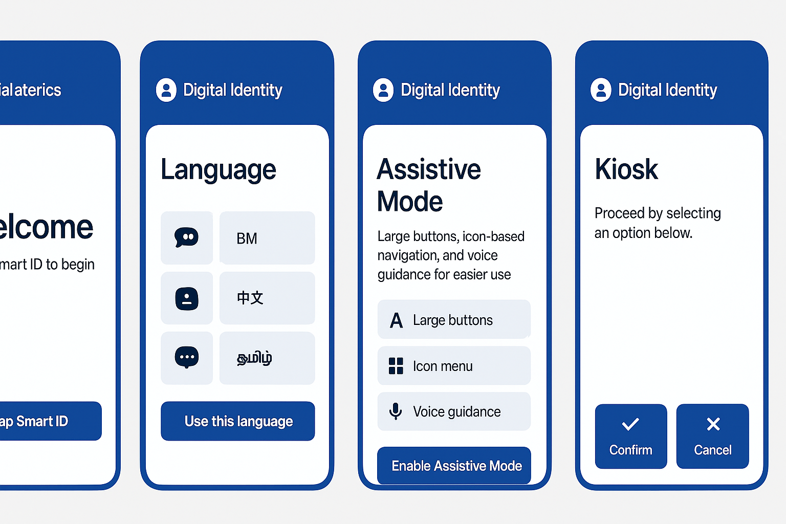
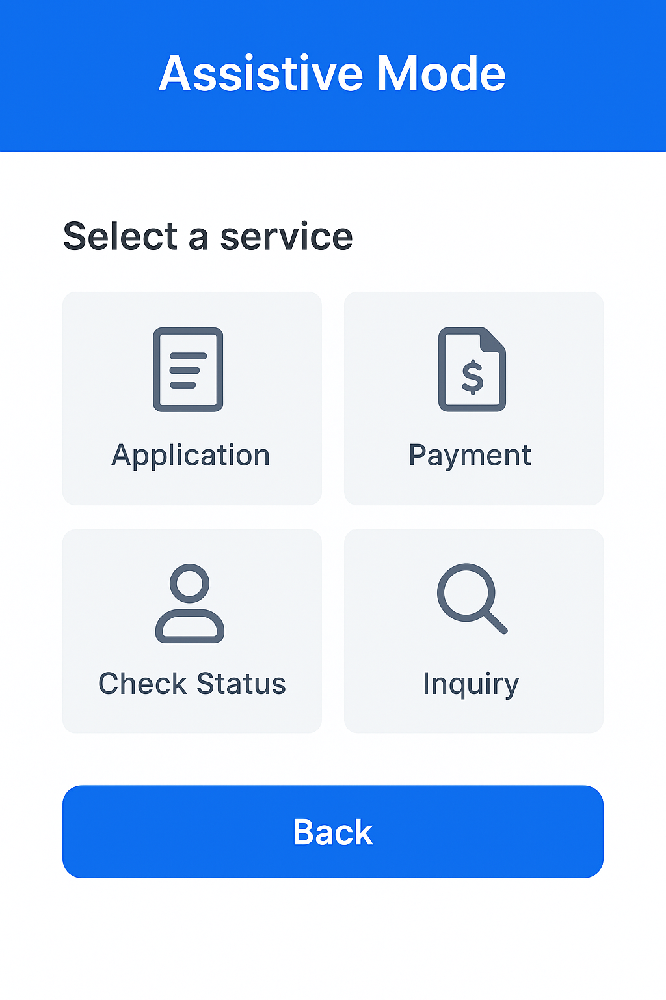
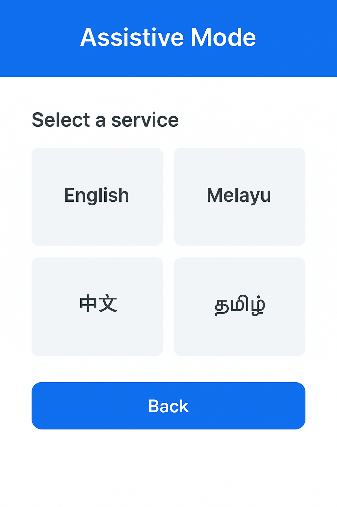
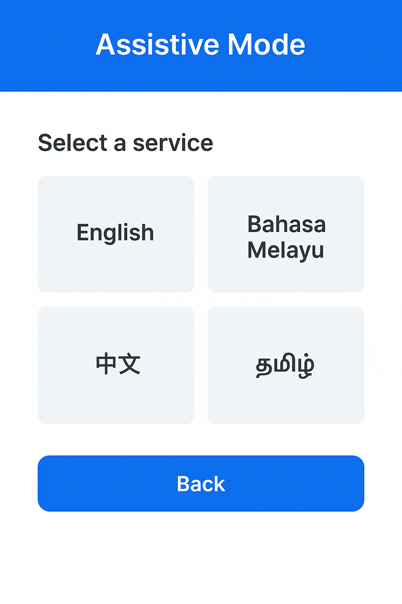
Digital Identity for All — Inclusivity Through Accessible Design
Smart ID Assistive Mode is designed to ensure every Malaysian — seniors, low-literacy users, persons with disabilities, and rural communities — can access Smart ID digital services confidently and independently. This demo showcases the interface screens of our proposed Assistive Mode.
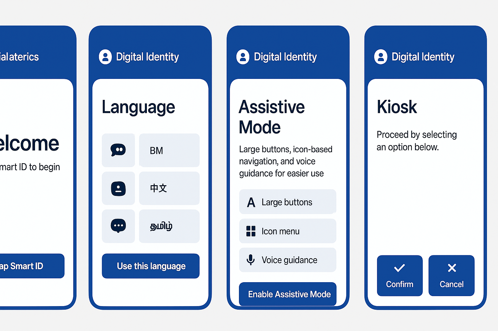
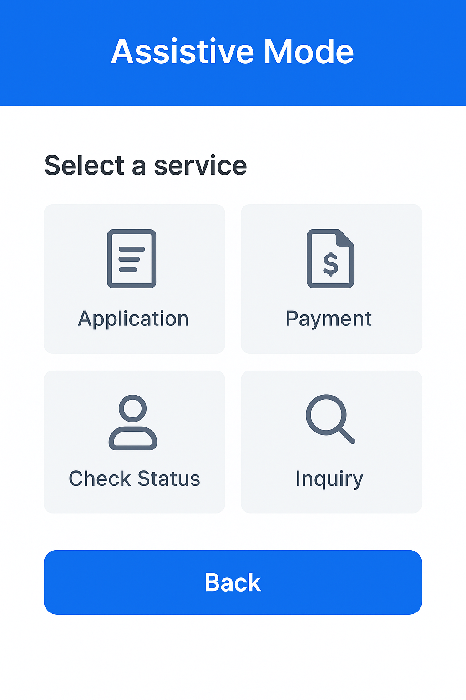
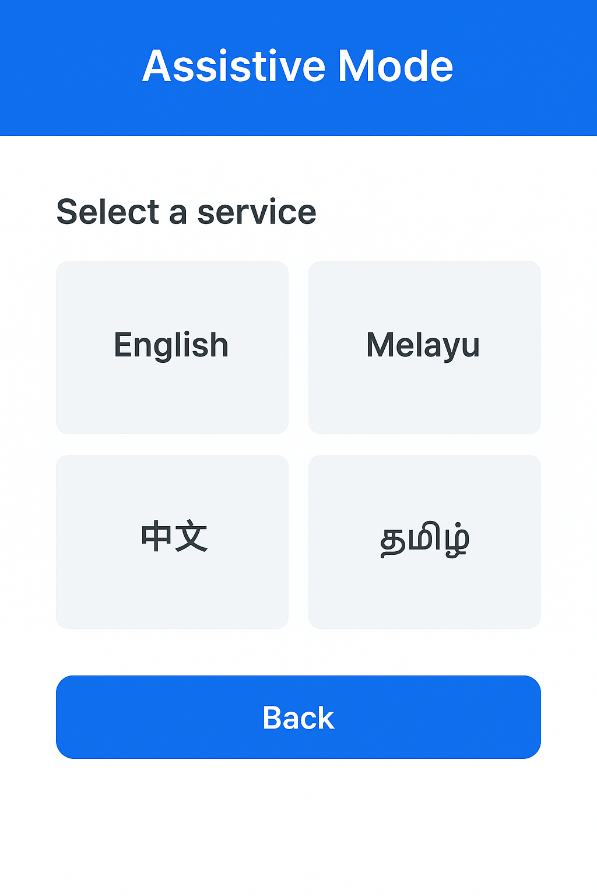
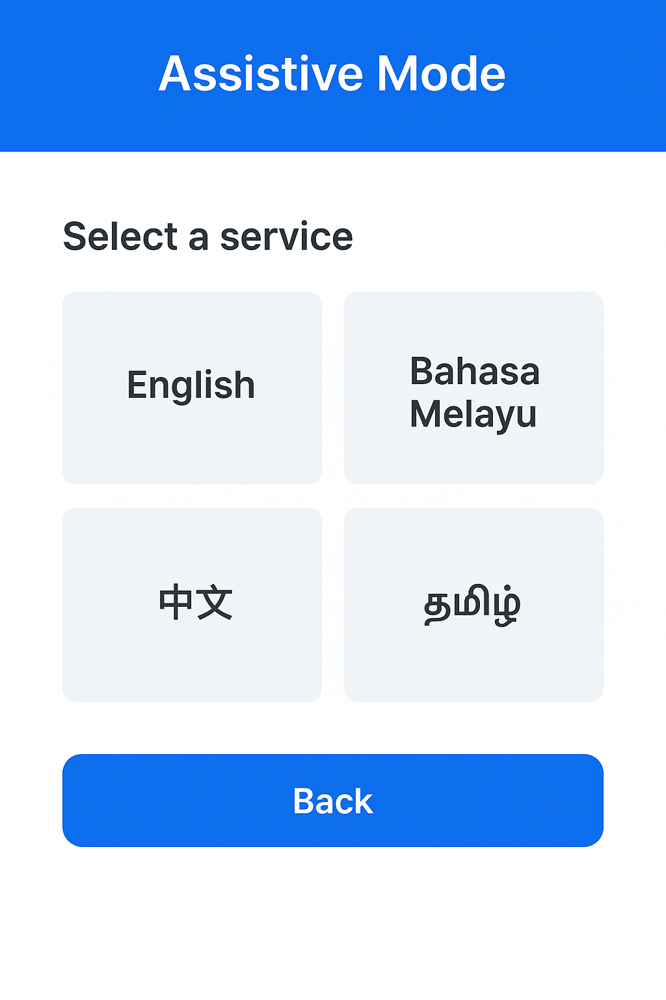
1️⃣ User taps Smart ID → 2️⃣ System detects needs → 3️⃣ Assistive UI loads → 4️⃣ User follows large-button or voice-guided steps → 5️⃣ Service completed smoothly.